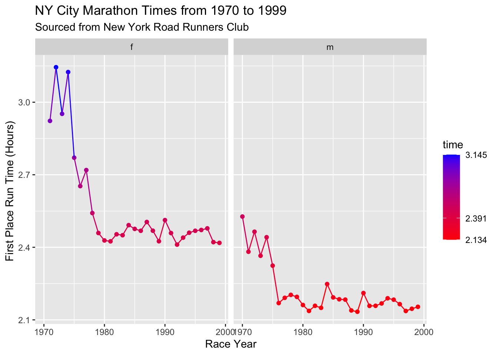

This year there was no world-famous New York City marathon (1). Normally, runners from all around the world would come to run across all five boroughs during the first week of November (2). A highly anticipated event, it usually brings together runners and New Yorkers alike. It was another disappointing - though necessary - cancellation in 2020.
We thought that since we all missed the race in 2020, that we could do something fun: look back to past NYC marathons. The marathon began in 1970, starting much smaller than today. It had a budget of only $1000, a $1 entry fee, and 55 finishers (out of 127 registered)! To put that in perspective, in 2017 the entry fee was $255 and there were around 51,000 finishers.
In our blast from the past we found 29 years of data from the New York Road Runners club (organizers of the race since its start) that recorded the times of the marathon winners, both male and female, from 1970 to 1999. We were curious to see how these times evolved over the years.

As we can see - the times have gotten faster over the years. It is to note the women’s data starts in 1971 as only one woman1 entered in 1970 but did not complete the race (2). The trend line helps emphasize this - there is a clear downward slope. This doesn’t come as much of a surprise as more and more people finish the race every year there are more chances of a faster person finishing. The race also became more serious and respected every year, which probably encouraged more serious runners and more serious training for the marathon.
While there is an overall increase in speed since the start of the race there is some fluctuation in time between the years. Sometimes, the trends in the men and women’s time match up (for example from 1971-1977) while during other periods there is a mismatch. Starting in 1979 the speed for the women runners has started to plateau meanwhile, this event occurred for the male winners only 3 years earlier in 1976.
According to organizers the 2021 NYC Marathon is still set to go ahead, though the specifics including who the race will be open to are not yet released. The pandemic has made going for a run easier for some, but harder for others, go ahead and estimate your NYC Marathon readiness against the past race winners using the provided graph!
| Method | koRpus | stringi |
|---|---|---|
| Word count | 476 | 457 |
| Character count | 2702 | 2799 |
| Sentence count | 31 | Not available |
| Reading time | 2.4 minutes | 2.3 minutes |
In this assignment, we attempted the following standards: